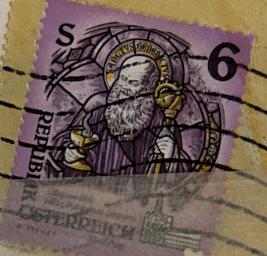
| SOURCE | TITLE| IMAGE MATCH | click to source page |
| Dreamstime.com | Stamp Printed in Austria from the Monasteries and Abbeys Issue Shows St. Benedict of Nursia, Mariastern Abbey, Gw Editorial Image - Image of aged, black: 99244800 | 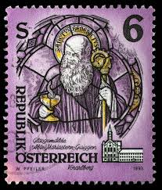 |
| eBay | Austria - 1993 - 6Sh - Trappist Abbey - Stift Mariastern in Vorarlberg - #17779 | eBay | 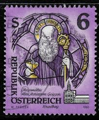 |
| Etsy | Tiny Square Stud Earrings Made From Genuine Vintage Postage Stamps - Osterreich Austria Postage Stamp 1983 Purple, Saint, Austria Monastery - Etsy | 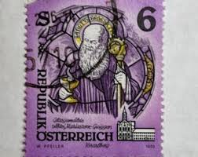 |
| eBay | Austria - 1993 - 6Sh - Trappist Abbey - Stift Mariastern in Vorarlberg - #17780 | eBay | 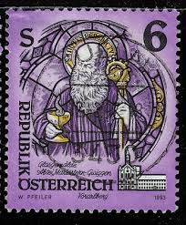 |
| Todocolección | austria. abadías y monasterios. 1993. yt-1937. - Compra venta en todocoleccion | 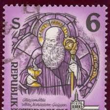 |
| HipStamp | Austria (Österreich), Scott #1601, used (o),1993, Saint Benedict, 6s | Europe - Austria, General Issue Stamp / HipStamp | 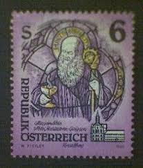 |
| CollectorBazar | Austria Mariastern Abbey Used - DS2277 | 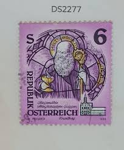 |
| eBay.de | Briefmarke: Serie Österreich: 6 Schilling | eBay.de |  |
| Osta | Leiunurk 1-195 Varia (209949087) - Osta.ee | 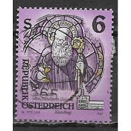 |
| MA-Shops | Österreich o 1993 - 6 S - Freim.- Erg.- Wert. - Stifte und Klöster in Österreich | MA-Shops | 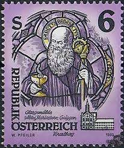 |
| eBay.de | Gestempelte Briefmarken aus Österreich als Einzelmarke mit Religions-Motiv online kaufen | eBay.de | 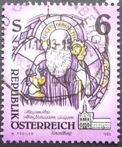 |
| Shutterstock | Austria Stamp Circa 1993 Stamp Printed Stock Photo 1295774008 | Shutterstock | 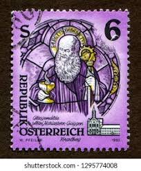 |
| Dreamstime.com | Vintage Austrian Stamp: St. Benedict Stained Glass from Mariastern Abbey Editorial Image - Image of graphic, gwiggen: 393685305 |  |
| eBay UK | 1993 - Austria Art from Monasteries/ St Benedict of Nursia 6s Stamp MNH SG#2327 | eBay UK | 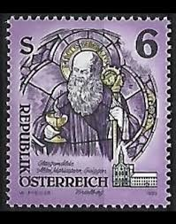 |
| Dreamstime.com | 1,936 Letter Medieval Stamp Stock Photos - Free & Royalty-Free Stock Photos from Dreamstime - Page 8 |  |
| Identify person in 30 year old stamp |  | |
| Allegro.SK | Rakúsko 1993 Mi 2108 Čisté **, • Ceny, Recenzie - Allegro | 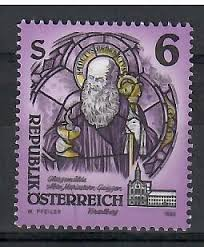 |
| Dreamstime.com | St. Benedict of Nursia, (stained-glass), Art from Monasteries Editorial Image - Image of europe, aged: 317957200 | 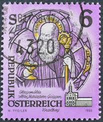 |
| Dreamstime.com | 144 Stained Glass Benedict Stock Photos - Free & Royalty-Free Stock Photos from Dreamstime | 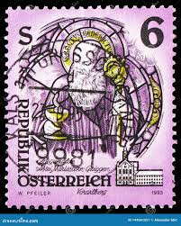 |
| stamp Austria 6.00 Schilling Saint Benedict Heiliger Benedikt österreich Briefmarke autriche timbre austria stamp Vorarlberg Abtei Kloster Stift postage monastery postzegel Oostenrijk اتریش تمبر bélyegek Ausztria طوابع النمسا znaczki Austria postzegel | 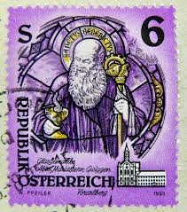 | |
| esam.ir | تمبر خارجی المان کد 119 چاپ 1993 |  |
| Shutterstock | 5 Maria Stern Abbey Royalty-Free Images, Stock Photos & Pictures | Shutterstock |  |
| ebid.net | MALTA, Nazju Falzon, Gorg Preca and Adeodata Pisani, yellow 2001, 6c, #2 on eBid Ireland | 224077216 | 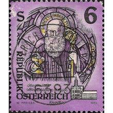 |
| Shutterstock | 71 Cistercian Abbey Stamps Royalty-Free Images, Stock Photos & Pictures | Shutterstock | 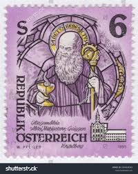 |
| sellosmundo.com | Sello: 5º CONFERENCIA PANAMERICANA - CONGRESO NACIONAL 4 CENTAVOS CASTAÑO de Chile America | 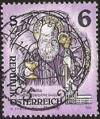 |
| iStock | Set Of Postage Stamps Stock Illustration - Download Image Now - Adult, Adults Only, Beer - Alcohol - iStock | 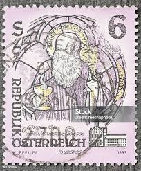 |
| ahtaunus.de | Angebote aus privater Hand - Republik Österreich - Wert 2 S | 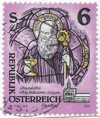 |
| Alamy | AUSTRIA - 1993: A stamp printed in Austria, shows Stained glass, Mariastern-Gwiggen Monastery Stock Photo - Alamy | 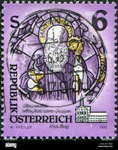 |
| Amazon.com | Amazon.com: Austria 2108,2110 (complete. problema.) 1993 Arte (sellos para coleccionistas) : Juguetes y Juegos | 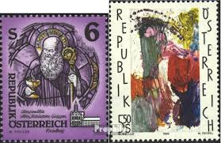 |
| 露天市集 | ½S¯¯ - 歐洲郵票(郵票) - 人氣推薦- 2026年2月| 露天市集 |  |
| kitantik | Efemera - 1993 Avusturya Trappist Manastırı Tam Seri MNH - kitantik - kitaLog | 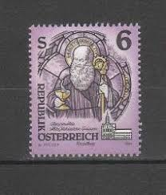 |
| Aukro | Známky Rakousko - strana 21 z 53 | Aukro.cz | 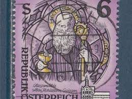 |
| Sohu | 邮说医学史51：西方修道院之父——圣本尼迪克特_搜狐网 | 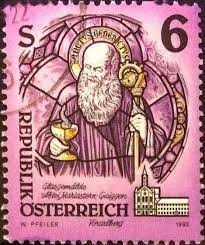 |
| Violity | Австрия. Религия. чистая марка (108119506) - купить на Violity | 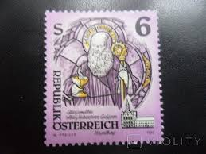 |
| Dreamstime.com | Святой Бенедикт Нурсийский на старинной почтовой марке Редакционное Стоковое Изображение - изображение насчитывающей бенгалии, столб: 194217519 | 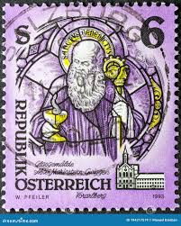 |
| esam.ir | تمبر اتریش - سری کامل - 1993 - پستی |  |
| Todocolección | austria °. año 1829-31 yvert 389. fin de serie. - Buy Antique stamps of Austria on todocoleccion |  |
| sarsfieldsvirtualpub.com | Esatdigiwank | Sarsfield's |  |
| esam.ir | یک قطعه تمبر خارجی نو اتریش طبق تصویر |  |
| Etsy | Austrian Art Glass - Etsy | 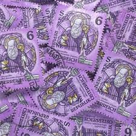 |
| eBay | 1993-95 Austria SC# 1601-1603 - Monasteries - 2 Different Stamps - Used | eBay |  |
| Kleinanzeigen | Briefmarken Republik Österreich kleinanzeigen.de | 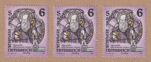 |
| eBay | Austria Postage: Lot 7 [1988-1995] - VF (Details below) - 2021 cat. value $16.80 | eBay |  |
| eBay | 1993 DEFINITIVES S6 S20 VF MNH AUSTRIA ÖSTERREICH | eBay | 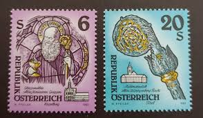 |
| Etsy | Stamp Art, Purple, Christmas, Stainless Glass, Austria, Large Used Stamps - Etsy |  |
| eBay | Austria 2094,2108,2109,2124,2134 (complete issue) used 1993 cle | eBay | 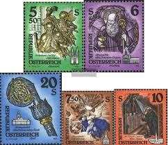 |
| PICRYL | 14 Christmas in germany in the 1970 s Images: PICRYL - Public Domain Media Search Engine Public Domain Search |  |
| Dreamstime.com | 02 09 2020 Divnoe Stavropol Territory Russia the German Postage Stamp 1977 Christmas Stamp King Kaspar Presents Gold To the Child Editorial Stock Image - Image of envelope, collection: 192653604 | 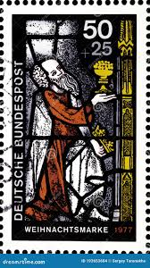 |
| Alamy | Mail man 1960s hi-res stock photography and images - Alamy | 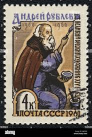 |
| The Itty Bitty Stamp Company | Germany Scott # B82/B86 Mint Never Hinged – The Itty Bitty Stamp Company | 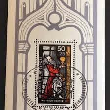 |
| eBay | ICOLLECTZONE Austria 564 VF used | eBay | 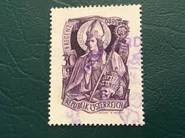 |
| eBay | GREAT BRITAIN 1470 (SG1636) - Christmas "King Offering Gold Crown" (pf70161) | eBay | 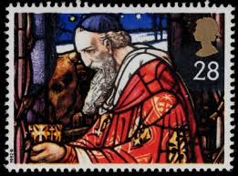 |
| Dreamstime.com | USSR - CIRCA 1961: a Stamp Printed in USSR Shows Andrei Rublev 1360-1430 , Medieval Russian Painter. Editorial Photography - Image of cross, historic: 253736382 | 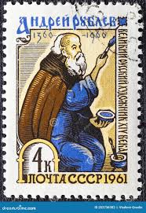 |
| Etsy | Kleine quadratische Ohrstecker aus echten Vintage Briefmarken - Osterreich Österreich Briefmarken 1983 lila, Heiliger, Österreich Kloster - Etsy.de | 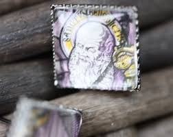 |
| Alamy | Andrei rublev icon hi-res stock photography and images - Alamy | 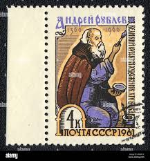 |
| Russian Philately | 1975 Sc 4484-4488 Miniatures from Palekh Art Museum Scott 4400-4404 for sale at Russian Philately | 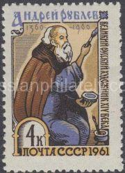 |
| The Itty Bitty Stamp Company | Germany Scott # B252a-B252c Mint Hinged – The Itty Bitty Stamp Company |  |
| Shutterstock | Germany Circa 1977 Postage Stamp Germany Stock Photo 2156221959 | Shutterstock | 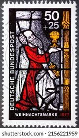 |
| Alamy | RUSSIA - CIRCA 1961: a stamp printed in the Russia shows Andrei Rublev, Rublyov, Medieval Russian Painter of Orthodox Icons and Frescoes, 600th Birth Stock Photo - Alamy | 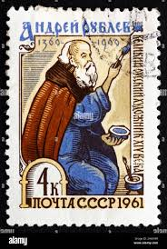 |